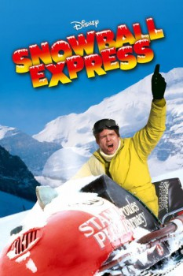

Country:United States, 93 minutes
Spoken languages:English
Genres:Comedy, Family
Director(s):Norman Tokar
Writer(s):Jim Parker, Don Tait
Video Codec:Unknown
Number: 1593

Certification:G
Storyline:
When John Baxter inherits a ski resort in the Rocky Mountains, he quits his job in New York and moves the family west to run it. Only to find that the place is a wreck. But together they decide to try to fix it up and run it. But Martin Ridgeway, who wants the property, does everything he can to ensure it will fail.
Cast:
Dean Jones (as Johnny Baxter), Nancy Olson (as Sue Baxter), Harry Morgan (as Jesse McCord), Keenan Wynn (as Martin Ridgeway), Johnny Whitaker (as Richard Baxter)
Medium: Media file,
Location: D:\Disney\Snowball Express.mp4
Loaned: No
Aspect ratio: Unknown